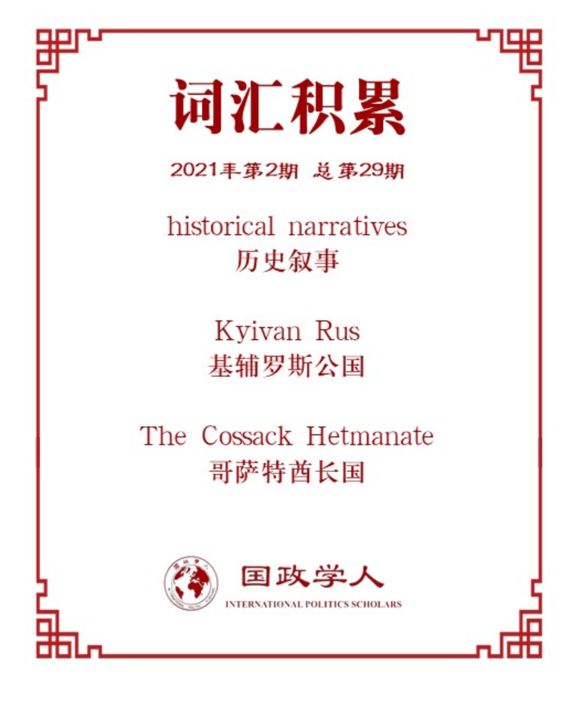

收录于合集

作品简介
【作者】 Lina Klymenko 坦佩雷大学国际关系研究员，东芬兰大学兼职教授，研究兴趣为东欧和前苏联的记忆和身份、政治语言和外交政策。
【编译】 赵雷（国政学人编译员，山东大学硕士研究生）
【校对】 赖永祯
【审核】 陈勇
【排版】 高辉
【美编 】马颖
【来源】 Klymenko, L. The role of historical narratives in Ukraine’s policy toward the EU and Russia. Int Polit 57 , 973–989 (2020).
【归档】 《国际关系前沿》2021年第2期，总第29期。
期刊简介
International Politics是一本具有开拓性的学术期刊，致力于探讨跨国问题和全球问题。期刊研究问题包括俄罗斯与西方关系、中国和平崛起的机会、正义战争的概念、古巴后卡斯特罗时代的前景、美国衰落的可能性等等。2018年影响因子0.693。
历史叙事在乌克兰对欧俄政策中的作用 ****
**** The role of historical narratives in Ukraine’s policy toward the EU and Russia ****
Lina Klymenko
文章导读
本文是期刊《International Politics》第57卷特辑中的文章之一，本期特辑以“历史记忆与外交政策”作为主题，本文着重探讨了历史叙事（historical narratives）与外交政策的关系。
在以往的研究普遍认为，历史叙事具有为外交政策提供动员力或者增强其合法性的功能，本文的研究则将重点转向了探讨历史叙事的结构是如何在话语上实现的。通过描述叙事者在特定的时间和空间内所做的事情，文章揭示了一个国家的政治领导层是如何组织该国的历史经历，以及各种历史事件是如何在叙事框架中被排序和相互连接起来的。作者首先考察了社会学及心理学相关著作对于“叙事”的概念化和理论构建，其次以乌克兰作为案例，分析了乌克兰的政治领导层对乌克兰历史叙事的建构，并指出这种叙事为乌克兰从亲俄转向亲欧的外交政策提供了助力。
在本文的第一部分，作者基于建构主义本体论和解释认识论阐释了“叙事”的概念，并对其发生作用的机制进行了理论化。从本体论来说，叙事是人们对所经历事件的个人或集体的主观认知，是一种对世界的意义构建，也是一种嵌入特定文化和政治语境中的交流模式。正因叙事具有建构主义的性质，所以对于叙事不存在客观上的真假之分。从认识论上来讲，叙事是一种认知结构，通过讲述故事，人们赋予重要的特定事件以意义。正因如此，叙事的结构即是故事情节的组织形式：叙事者将各个事件或事件中的各元素编织起来，划分故事的开始和结束，并明确这些事件的意义。叙事结构的特点包含对过去事件的重构、叙事的流畅度和情节的可用性。这种回顾性的结构也意味着叙事是根据现实需要解释过去的经历——具体而言，叙事通过四个方面对现在及未来发生作用：第一，故事是暂时的和互动的。因此，它们可以根据情况进行调整，故事的讲述者和听众都可以以一种互惠的方式来塑造故事。其次，故事是主观的。它们是关于具体人物的，其真实性和说服力取决于人物的刻画方式。故事反映了人们掌握现实的方式，而现实生活中的困境与具体的人有关，而不是与抽象的问题有关。因此，当人们讨论这些困境时，人们会站在一边，通过与人接触来接触日常现实。第三，故事是有价值的，这意味着它们与道德问题有关。故事中的人物具有道德指向性，当人们喜欢一种角色而不是另一种角色时，这就成了一个道德问题。第四，故事是以行动为导向的，因为讲故事是为了激起行动或为行动辩护。故事的可信性并不在于其可信度或正确性，而是在于提供了行动与结果之间令人信服的联系。总的来说，故事起着解释、论证和指导的作用。
在本文的第二部分，作者通过考察乌克兰总统的讲话、乌克兰议会通过的法案以及乌克兰国家记忆研究所(Ukrainian Institute of National Memory)的文件分析了乌克兰外交政策话语中历史叙事的运用。
首先，乌克兰通过对基辅罗斯公国（Kyivan Rus）的历史叙事传播了这样一种理念:在9 - 13世纪，乌克兰人有自己的民族国家，并且在文化上与欧洲相似。一方面，乌克兰总统波罗申科曾公开指责普京称安娜公主为俄罗斯公主，称安娜公主是乌克兰人，其与法国国王亨利一世的婚姻，以及后来成为法国女王的历史证明了乌克兰属于欧洲。另一方面，弗拉基米尔大公(Prince Volodymyr The Great)带领基辅罗斯接受基督教（东正教派）的历史被视为乌克兰具有欧洲认同的象征，在这种背景下，2017年11月，乌克兰总统还签署了一项议会颁布的法律，将12月25日圣诞节作为公共假日。
其次，乌克兰通过对哥萨克酋长国（The Cossack Hetmanate）的叙事强调了乌克兰人和俄罗斯人有着不同的历史经历。俄罗斯人被视为殖民统治者，而哥萨克酋长则被视为乌克兰独立的斗士。例如，乌克兰总统将哥萨克酋长伊万·马泽帕(Ivan Mazepa)描绘成乌克兰抵抗俄罗斯的象征（曾在1709年与瑞典结盟反对沙皇彼得一世），并进一步将马泽帕与华盛顿、玻利瓦尔和圣雄甘地进行比较，称他们为“对抗帝国力量的战士”。此外，哥萨克历史强调了乌克兰与欧洲分享着某些文化和政治传统，而俄罗斯则被框定为一个不同的文化- 政治空间。例如，哥萨克人奥立克（Pylyp Orlyk）因创造了第一部乌克兰宪法而被载入史册。在2017年乌克兰宪法日的演讲中，总统波罗申科强调，1996年通过的乌克兰现行宪法起源于1710年的《奥立克宪法》（Orlyk Constitution）。《奥立克宪法》的颁布证明，乌克兰在300年前就已经与欧洲分享了民主、自由和良政。
最后，在关于苏联的叙事中，1917-1991年的苏联时代被描述为俄罗斯占领乌克兰的时期。这种叙事下，俄罗斯给乌克兰人造成了苦难，乌克兰人也被描述为乌克兰的国家地位而战的民族。在1917-1921年乌克兰革命期间出现的乌克兰人民共和国(UNR)，被认为是当今乌克兰民族国家寻求在俄罗斯的侵略下保持其国家地位的典范。为了体现乌克兰和欧洲国家有着共同的历史。乌克兰议会将5月8日定为二战纪念日。正如乌克兰国家记忆研究所在2015年解释的那样，新的纪念日的意味着乌克兰放弃了俄罗斯的胜利日（5月9日）庆祝方式，开始了与欧洲相同的二战纪念传统。2016年和2017年，在纪念二战结束纪念日的同时，乌克兰总统进一步强调，随着新的纪念日的设立，乌克兰加入了欧洲国家的行列。2018年5月7日，乌克兰总统波罗申科与欧洲国家的领导人在格但斯克举行了纪念会议，敦促欧洲承认乌克兰是欧洲的一部分，因为在他看来，乌克兰为战胜纳粹主义做出了巨大贡献:“数百万乌克兰人为战胜法西斯主义献出了生命，这就是乌克兰理应成为欧洲大家庭一员的原因。”
编译评述
本文揭示乌克兰政治领导人是如何通过推行某些历史叙事，支撑着乌克兰目前亲近欧盟、远离俄罗斯的政策转变。通过对乌克兰历史上基辅罗斯、哥萨克酋长国和苏联时期的叙事分析，可以看出乌克兰的政策制定者已经形成了一种认识，即乌克兰有着与欧盟国家相似而与俄罗斯不同的历史经历。这些叙事具有一个共同的结构，即它们描述了在特定时间框架(几个世纪)、特定空间(欧洲或俄罗斯)发生在一个集体(乌克兰国家)身上的事件。在这三种叙述中，欧洲和俄罗斯都被定义为不同的政治、文化和宗教空间。在选择这些“文明”(欧洲和俄罗斯)时，乌克兰被描绘成与欧盟有共同之处而与俄罗斯不同的国家。
鉴于这些历史叙事的结构，很明显，它们不仅应该被理解为对乌克兰过去的叙事，也应该被理解为对乌克兰未来的叙事。事实上，乌克兰政策制定者所创造的历史叙事，正是他们所设想的乌克兰命运的写照。就乌克兰的外交政策而言，乌克兰的执政者们想要通过历史叙事来证明，乌克兰脱离俄罗斯并成为欧盟成员的愿望是正确的。因此，乌克兰政治领导人的叙述可以这样理解:“由于我们乌克兰人有不同于俄罗斯的历史经历，我们有权成为独立于俄罗斯的单一民族国家;由于我们有共同的欧洲历史，我们有权成为欧盟成员国。”通过这种方式，通过在乌克兰的过去和现在之间建立因果关系，乌克兰的决策者们呼吁欧盟共同体承认他们共同的欧洲历史，这反过来证明了他们共同的未来。此外，通过对历史叙事的建构，乌克兰的政策制定者将乌克兰的欧盟成员国身份问题提升为欧盟的道德关切。例如强调乌克兰在18世纪欧洲民主发展中所做的努力，以及在第二次世界大战中与纳粹主义作斗争。乌克兰总统的演讲中出现的诸如“我们终于回到了欧洲的家”、“我们正在与(欧洲)家族重新统一”或“我们与(欧洲)重新统一的进程”等短语，制造了一种错觉，即今天的乌克兰是一个古老的政治和文化形态，欧洲和俄罗斯也是。这种对国家起源的历史化似乎也是其他国家外交政策话语中反复出现的特征。
就其局限性而言，这篇文章在乌克兰政策制定者对过去的叙述方面仍有局限性。它并没有揭示他们一直保持沉默的那些过去。根据历史记忆的相关理论，讲一个故事涉及到选择性挪用，这意味着它取决于叙述者在他的故事中强调什么和省略什么。因此，对于叙述中的选择性忽视的探索将为本研究提供有趣的扩展。
词汇整理

文章观点不代表本平台观点，本平台评译分享的文章均出于专业学习之用, 不以任何盈利为目的，内容主要呈现对原文的介绍，原文内容请通过各高校购买的数据库自行下载。

好好学习，天天“在看”
国政学人
支持学术公益与知识传播
微信扫一扫赞赏作者 __赞赏
已喜欢，对作者说句悄悄话
取消 __
发送给作者
发送
最多40字，当前共字
上一页 1/3 下一页
长按二维码向我转账
支持学术公益与知识传播
受苹果公司新规定影响，微信 iOS 版的赞赏功能被关闭，可通过二维码转账支持公众号。